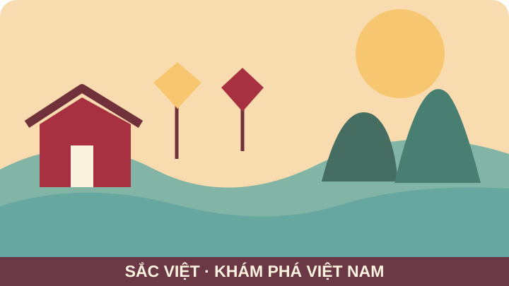

SẮC VIỆT · DỰ ÁN CUỐI KHÓA HP12
Khám phá vẻ đẹp Việt Nam qua từng câu chuyện.
Hành trình đến những miền di sản, danh thắng và nét văn hóa Việt. Website được học sinh thiết kế với Figma, xây dựng bằng HTML/CSS và làm tương tác bằng JavaScript.

CÂU CHUYỆN TỪ CÁC MIỀN ĐẤT
Di sản và sắc màu Việt Nam
Tìm kiếm địa danh, khám phá văn hóa và lọc bài viết theo chủ đề.
Không tìm thấy bài viết phù hợp. Hãy thử từ khóa khác.